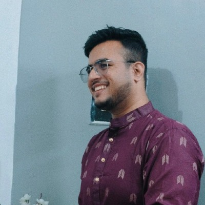
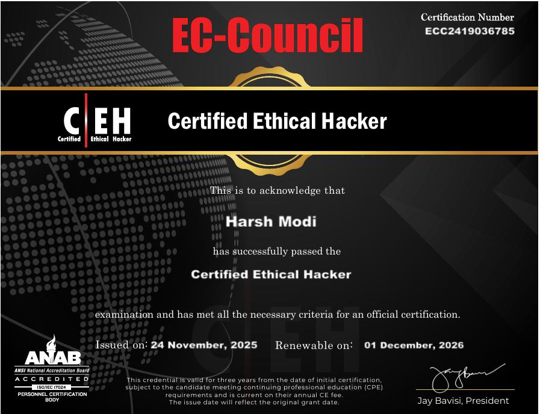
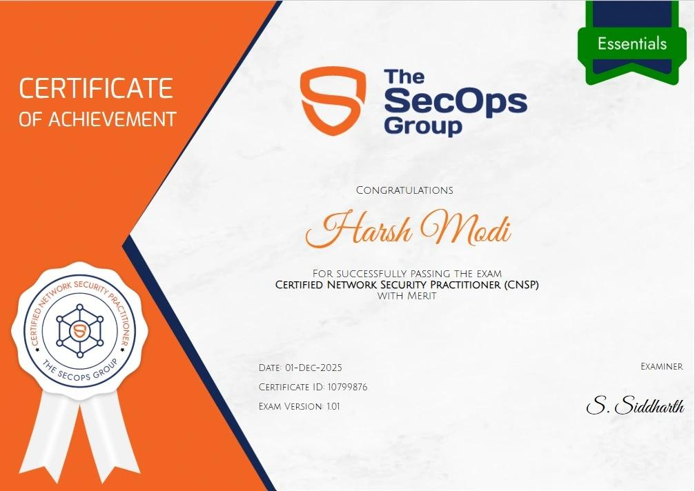
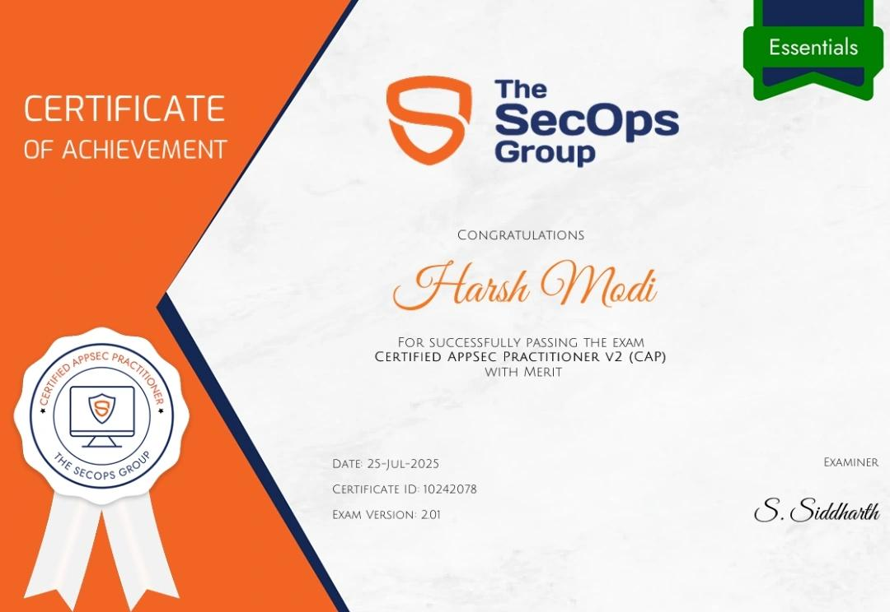
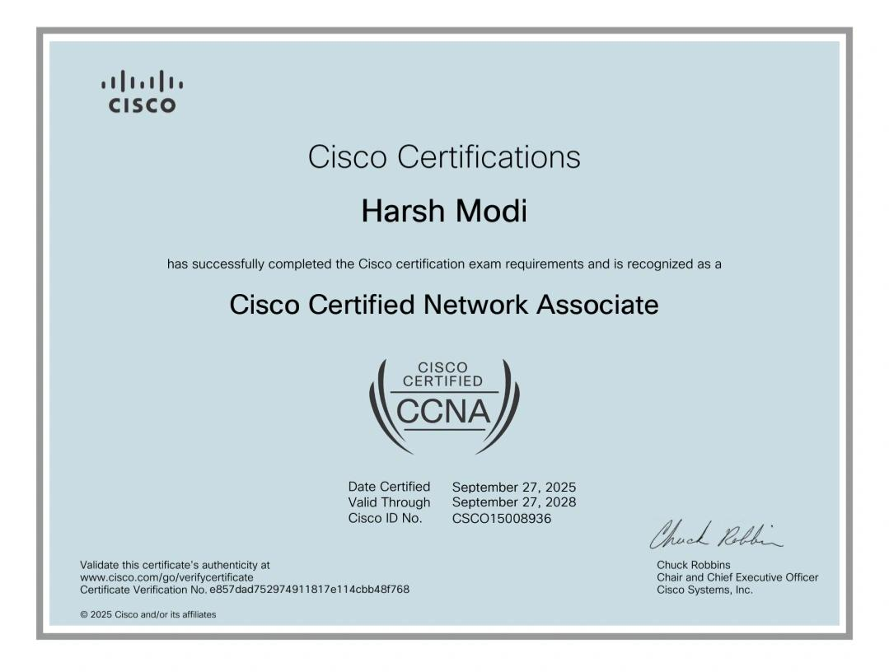
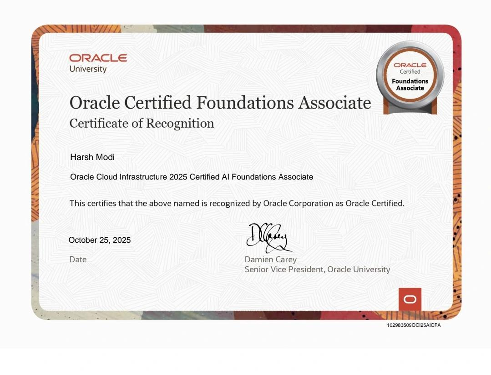
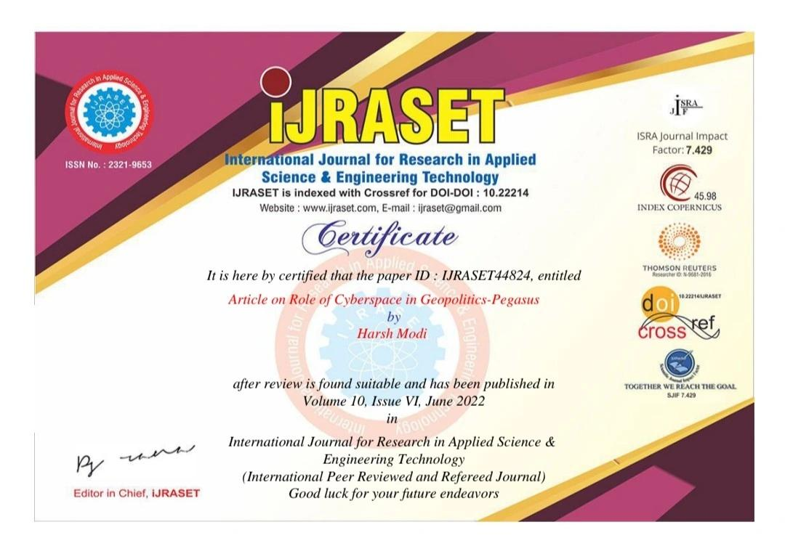

Exposure Score10 → 5
Know what is exposed before it becomes an incident.
I work across threat intelligence, digital risk, attack surface management and security operations, turning messy security signals into clear findings and measurable action.

The projects I work on connect investigation, response and risk reduction to outcomes that teams can actually see.
Selected risk and intelligence outcomes from the work.
Know what is exposed before it becomes an incident.
Reduce the paths an attacker can exploit.
Turn vulnerability data into prioritized intelligence.
See the external footprint as an attacker sees it.
Shrink the digital footprint that invites attention.
Protect the signals people trust first.
My work sits between threat intelligence, technology, people and business decisions.
Security teams need visibility, context and coordinated response.
Understand what is exposed before an attacker does.
The security domains, investigations and operating areas that shape my day-to-day work.
Threat landscape research, IoC/IoA analysis, malicious infrastructure investigation, OSINT and intelligence-to-action workflows.
Identify domain impersonation, typosquatting, exposed credentials, malicious applications, repositories and brand-targeting activity.
Review internet-facing assets, open ports, vulnerabilities, misconfigurations, certificates and remediation priorities.
Work across SIEM monitoring, alert triage, detection workflows, investigation, escalation and threat-intelligence integration.
Strengthen phishing reporting, awareness, user engagement, incident visibility and rapid containment workflows.
Support risk assessment, control reviews, documentation and practical alignment with ISO 27001, DPDPA and GDPR.
A practical six-step workflow.
Map the external footprint, assets, exposure and current security processes.
Identify vulnerabilities, misconfigurations, malicious activity and process gaps.
Correlate indicators and context to understand what matters.
Separate critical business risks from background security noise.
Translate findings into remediation, containment, blocking and process improvements.
Track whether actions reduce exposure and improve resilience.
I use established frameworks to move from raw signals to explainable decisions, repeatable investigations and useful defensive action.
Map observed tactics, techniques and procedures to understand behavior and strengthen detections.
Collect and validate open-source intelligence across people, domains, infrastructure and public records.
Trace an intrusion from reconnaissance through action on objectives to identify disruption points.
Link adversary, capability, infrastructure and victim to turn isolated indicators into context.
Organize security outcomes across Identify, Protect, Detect, Respond and Recover.
The through-line: collect evidence, add context, test the story, prioritize what matters and turn intelligence into action.
Examples from my enterprise security work.
Continuous attack surface monitoring, threat intelligence and remediation coordination contributed to measurable reduction in organizational digital risk.
Digital Risk Score
Established and led HFCL Cybercell, using employee reporting as an early-warning security layer for phishing.
Phishing incidents analyzed annually · 100+ malicious domains blocked
Hands-on information security experience across external threats, SecOps, endpoint security, cyber awareness and stakeholder management.
A verifiable record of cybersecurity, networking, cloud and AI qualifications. Open any document to inspect the original certificate.







Certificates are shown as provided by the credential holder. For formal verification, use the issuing organization’s verification process.
Recognition for practical security work and published research, shown through the original supporting documents.

Certificate of Recognition for contribution to Project Suraksha and implementation of a Cyber Security Framework.

Research author certificate issued by the International Journal for Research in Applied Science & Engineering Technology.
Let's identify the risk, prioritize the problem and define practical next steps. Enjoyed my work? A follow, read, or thoughtful clap on Medium helps keep the research going and turns good security writing into a little extra momentum.